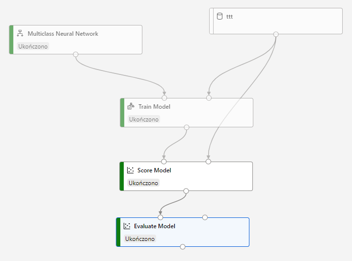
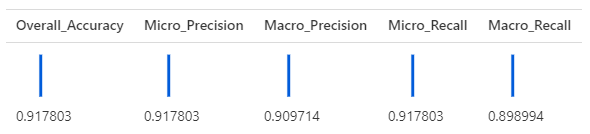

The training data is prepared with the TicTacToe JS library and encoded in the same way as in an ad-hoc Neural Network.
The learning process took over 12 minutes and the final accuracy was 0.918. This is far too little to play tic-tac-toe game correctly.


The research should be continued with more complex pipelines.